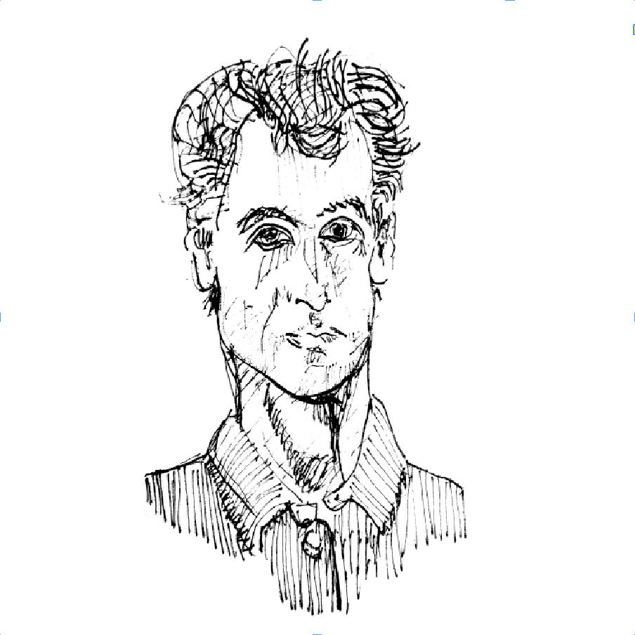

Neue Wahrnehmungen
In den letzten zehn Jahren traf sich das Netzwerk ‹Goetheanum Meditation Worldwide Initiative› ein- bis zweimal pro Jahr, um Erfahrungen und Übungen auszutauschen. Das Projekt ‹Meditation in Conversation› (Gespräche zur Meditation) kann als ein Teil der Initiative verstanden werden. Das Anliegen ist es, Meditation als anthroposophischen Kulturimpuls sichtbar zu machen und Menschen zu helfen, die eine innere Kultur vertiefen oder erforschen wollen, mit der Frage: Wie können wir uns gegenseitig in dieser Richtung unterstützen? Diese Gesprächsreihe gibt Menschen die Gelegenheit, von ihren Erfahrungen zu erzählen und damit zu einem Verständnis beizutragen, wie und was besser in der anthroposophischen Meditation funktioniert: Warum meditieren wir? Was ist das Einzigartige Anthroposophischer Meditation? Brauchen wir einander auf dem Weg unserer Entwicklung?
Heute treffen wir Nathaniel Williams aus den usa. Er ist Meditierender, Künstler und Akademiker zugleich. Sein Wohnzimmer ist vom Boden bis zur Decke voll von philosophischen Büchern, doch er arbeitet in erster Linie in den visuellen und darstellenden Künsten. Als energetische Persönlichkeit mit starkem Interesse an der Wissenschaftstheorie jongliert er mit anregenden Zitaten und zugleich macht es ihm Freude, mir eine rege Melodie auf dem Banjo vorzuspielen. Um ihn besser zu verstehen, können wir uns an seinem Gedanken orientieren, dass ‹wir in der anthroposophischen Meditation Individualitäten finden, die an neuen Forschungsmethoden zusammenarbeiten und neue Wahrnehmungen fordern.›
Welche Person war die erste, von der Sie wussten, dass Sie meditiert?
Ich denke, es war die Schwester meiner Mutter und ihr Ehemann. Etwa zwölfjährig wurde ich darauf aufmerksam. Mein Onkel ist Buddhist und Kampfsportler. Ich erlebte in ihm eine innere Disziplin und Achtsamkeit. Meine Tante ist Dichterin und große Naturliebhaberin. Mir schien, dass sie in ihrer Naturliebe eine spirituelle Dimension in sich pflegte und entwickelte. – Auch mein Vater sensibilisierte mich für die kontemplative Tätigkeit. Er betet. Er ist Christ, wenngleich er sich nicht ernsthaft an Gemeinde oder Liturgien beteiligt. Er nimmt sich regelmäßig Zeit für Stille und Gebet und um seine Aufmerksamkeit auf etwas zu lenken, das ihm in seinem Leben bedeutend scheint.
Warum haben Sie die Anthroposophie als Grundlage für Ihre Arbeit gewählt?
Als Jugendlicher begann ich mich für Meditation zu interessieren, was zum Teil an der vorherrschenden Kultur in Amerika lag. New-Age-Literatur gab es überall in meiner Jugend. In der suburbanen Kultur des postmodernen und postindustriellen Amerikas herrschte eine intensive Sinnsuche. Drogenkonsum und Experimente mit Spiritualität und Praktiken von verschiedenen Quellen waren nicht ungewöhnlich. Selbstverständlich führte das auch zu dramatischen Erfahrungen, die den Realitätssinn erschütterten. Ich machte solche Erfahrungen, die mich in ein existenzielles Dilemma trieben. Ich war ungefähr 14, als ich die Schulbibliothek nach Büchern von Menschen, die aus erster Hand von spirituellen Erlebnissen berichten konnten, durchkämmte. Es wurde unabdingbar, mich meinem Seelenleben anzunehmen. Zuerst fand ich viel beschreibende Literatur, schließlich aber auch hilfreiche anleitende Schriften. Größtenteils waren sie von buddhistischen Meditationsübungen inspiriert. Bald besuchte ich Yogakurse, und ich erinnere mich, dass ich auf die Bhagavad Gita stieß und sie durchlas.
Ein Freund gab mir – ich war ungefähr 17 – ein Buch von Rudolf Steiner. Steiner wirkte wie ein Intellektueller und ich war mir unsicher, ob er über seine eigenen Erfahrungen oder über Traditionen und Konventionen schreibt. Zwei Jahre später las ich seine ‹Philosophie der Freiheit›. Dabei hatte ich ein Erlebnis, man könnte es ein spirituelles nennen, auch wenn das Buch kein mystisches Werk ist. Diese Verknüpfung von spirituellem Erleben und Philosophie interessiert mich zutiefst.
Ich war 19 und ohne Verpflichtungen und wollte mehr erfahren. Ich hatte von einer Art Schule in der Schweiz gehört. Ich hatte ungefähr 500 Dollar und kaufte ein einfaches Flugticket. Ich wusste nicht, ob ich da bleiben oder Europa bereisen würde. Letztendlich verbrachte ich fünf Jahre am Goetheanum und studierte Malerei und ein wenig Theater.
Vielleicht beantwortet das die Frage, wie ich auf die Anthroposophie stieß. Die Antwort, warum sie zentral für meine Praxis wurde, ist noch eine andere. Ein Reiz des anthroposophischen Ansatzes ist die Weiterentwicklung und Vervollkommnung von Erfahrung hin zu Wissen und Weisheit. Die fundamentale Orientierung ist ein Interesse für alle Varianten des Menschen und der weltlichen Erfahrung. Durch kontemplative Übungen entsteht eine Art des Wissens und der Wahrnehmung, die sich unterscheidet von intellektueller Erkenntnis. Sie stellt eine Erweiterung des Empirismus dar. Steiner experimentierte damit und bereitete so den Weg für die Beschäftigung mit Haltungen und Praktiken, sodass reelle, doch subtile Aspekte der Erfahrung spürbarer und offenkundiger und unbekannte Erfahrungen erkundet werden können.
Empirismus auf die Sphäre des Spirituellen ausweiten zu wollen, ist – natürlich – sehr ambitioniert. Diese Praktiken an den Wurzeln der Anthroposophie kann man als eine mögliche Antwort auf die Forderung von William James (1876–1907) nach einem radikalen Empirismus sehen. In Amerika erlebte er – einer unserer größten Denker – am Ende seines Lebens einen spirituellen und intellektuellen Wandel. In seinen Vorträgen, ‹Das pluralistische Universum›, betonte er die Notwendigkeit eines radikalen Empirismus.
Worin liegt für Sie die Einzigartigkeit der anthroposophischen Meditation?
Vor hundert Jahren verhalf die umfangreiche und inspirierende Tätigkeit Rudolf Steiners und seiner Mitarbeiter zu frischen Impulsen in zahlreichen kulturellen Praktiken, die an Wertschätzung und Attraktivität verloren hatten, und sie entwickelten ganz neue. Vieles stammte aus Mitteleuropa, war aber verdrängt von naturalistischen Konventionen, die zumeist aus Großbritannien stammten und zum Status quo wurden.
Obwohl die Vielfalt so groß ist und es daher schwerfällt, zu generalisieren, sticht manches hervor. Etwa jene Praktizierenden, die ihren Fokus auf Visualisierungen, auf das Bilden innerer Vorstellungen legen und an der Entwicklung besonders starker, imaginärer Erfahrungen arbeiten. Ein Effekt, der dabei gelehrt wird, ist, dass ein Zeitpunkt kommen wird, an dem man Bilder wahrnimmt, die nicht mit der momentanen physischen Realität korrespondieren. In diesem Moment werden dir Teile deines Selbst bewusst, die sonst verborgen sind. Sie erscheinen einem in einer beunruhigenden Art und Weise und erfordern in der Auseinandersetzung viel Ehrlichkeit, Mut und Demut. Diese Erfahrungen werden als Ereignis vermittelt, nicht als Symbol gedacht oder als abstrakte Lehre. Dies deutet auf eine Besonnenheit und Ehrlichkeit im Bezug zu unserer Menschennatur, die egoistische und böse Impulse berücksichtigt und versucht, sich ihrer auf eine verantwortliche Weise bewusst zu werden und mit ihnen zu arbeiten.
Warum meditieren Sie?
Das ist eine tolle Frage. Wie erwähnt, war es für mich eine Notwendigkeit, um überhaupt meinen Weg zu finden. Doch es geht darüber hinaus. Die Personen in meinem Leben, die meinem Eindruck nach empfindsamer und wacher waren, beschworen nachdrücklich, dass Meditation auf das Wohl von allen und allem gerichtet sein soll, was existiert. Eine der Pathologien, in die man sich verrennen kann, wenn man zu meditieren beginnt, ist ein gewisser spiritueller Egoismus, bei dem man eingenommen wird von der Faszination meditativer Erfahrungen, wie etwa Ekstase und Wonne. Daher kann man sich zu Beginn einer Meditation ausrichten mit dem Gedanken: ‹Ich beschäftige mich jetzt mit dieser Übung, und bei allem, was ich tue, hoffe ich, dass es der Menschheit und allen anderen Wesen der Gesamtheit zugutekommen wird.›
Haben Sie einen Rat für jemanden, der gerne anfangen möchte zu meditieren?
In Benjamin Franklins Autobiografie findet man die Anmerkung, dass es genauso viel Sinn macht, Leuten zu sagen, dass sie gut sein sollen, wie Hungernden, dass sie ernährt werden sollen. Die Frage ist: Wie verschafft man sich Nahrung? Man muss den Menschen zeigen, wie man an Essen kommt, um ihnen mit ihrem Hunger zu helfen, und das Gleiche gilt für Güte und spirituelle Entwicklung. Die wesentliche Frage lautet: Wie wird man gut? – Franklin erforschte die Literatur und hat 13 Tugenden aufgestellt und geordnet, von der einfachsten bis zur schwersten. Er entwarf ein System mit Übungen für 13 Wochen. In der ersten Woche übte er die Tugend der Mäßigung: ‹Iss nicht bis zum Stumpfsinn; trink nicht bis zur Überhebung.› Er wusste genau, ob er zu viel gegessen hatte, sodass er sich träge fühlte, oder zu viel getrunken und einen Schwips hatte. Jeden Abend vermerkte er Vorfälle, bei denen er seine Vorsätze verletzt hatte. Während der zweiten Woche fügte er die Tugend der Stille hinzu: ‹Sprich nicht, wenn es anderen nicht zugutekommt; vermeide belanglose Gespräche.› Schließlich übte er sich in der 13. Woche in allen 13 Tugenden. Die letzte Tugend besteht darin, Jesus und Sokrates zu imitieren, was am vieldeutigsten ist. Franklin konnte diesen Zyklus viermal im Jahr durchlaufen und notierte jedes Mal, wie erfolgreich er war. – Von Benjamin Franklin kann man lernen: mit erreichbaren Zielen beginnen und dann nach und nach daran anknüpfen. Alles hat seine Zeit und seine eigene Abfolge. Vorschläge dazu findet man in zahlreichen Büchern über Meditation, die von verschiedenen Denkern ergründet wurden.
Zeichnung Nathaniel Williams
Übersetzung Imogen Pare